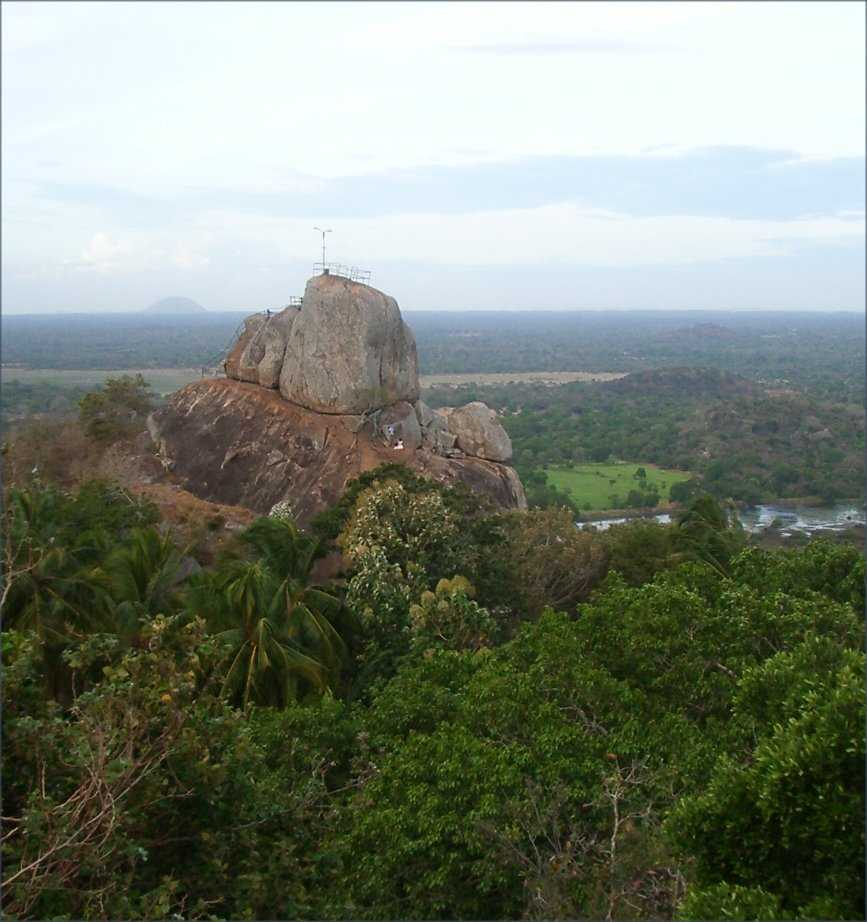
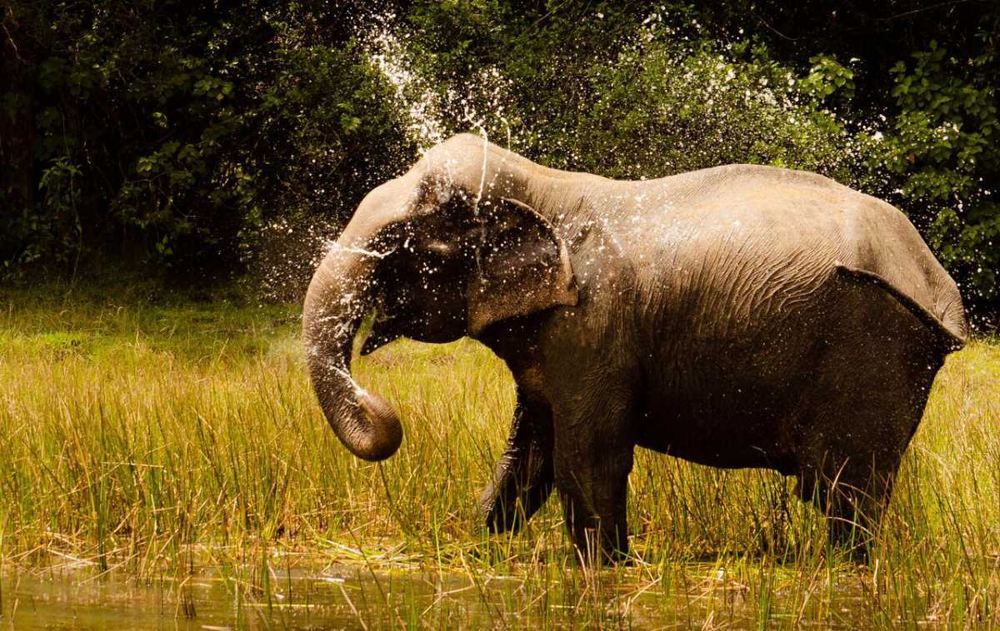
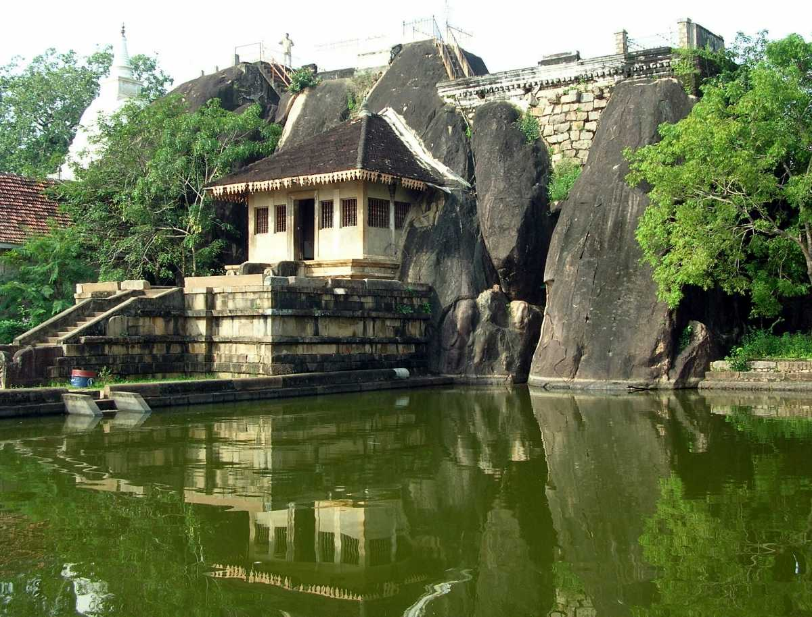
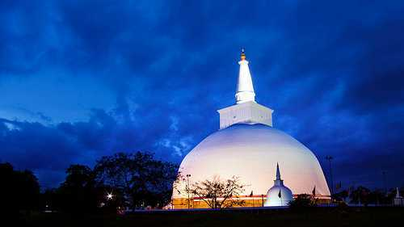
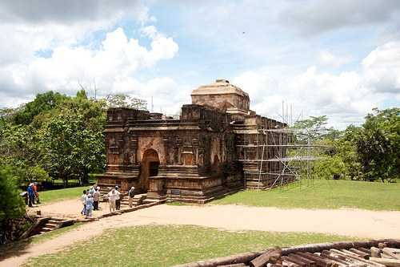

Mihintale
Ceylon, as it was formerly known rests on a beautiful landscape down south of India; hills, beaches, valleys and waterfalls adorn this country. One such ancient marvel is the hills of Mihintale located 12 km from Anuradhapura which are known for religion, monarchy, warfare and the underlying sense of scenic diversity.
Mihintale in the Sinhalese language means Mahinda’s hill – a Buddhist monk in the 11th century. This city was declared a wildlife sanctuary more than 2,200 years ago, making it the oldest of shelters in the world.
Buddhism saw its conception in Sri Lanka in the rocky hills of Mihintale when King Devanampiya Tissa met monk Mahinda on the hilltop. Ever since then the Sri Lankans have had a stronghold of Buddhist teachings which was later enriched by Islam and Hinduism. They comprise of the Sinhalese, Indian Tamils, Sri Lankan Tamils and the Muslims. Their lives revolve around religious beliefs, that makes Mihintale a city with significant architecture, tranquil stupas and sanctuaries. All in all, the people hold sentiments close to their hearts and a trip to Mihintale will speak immensely about their beliefs.

Wilpattu National Par
Wilpattu National Park is situated on the western coast of Sri Lanka, approximately an hour away from the ancient city of Anuradhapura. This national park has the enviable distinction of being the oldest and the largest national park in the country.
The park has earned its name from the numerous 'villus' (natural lakes in Sinhalese) that spread across the area. Wilpattu is known for its large population of leopards, among the highest in Sri Lanka.
Apart from the leopards, one can spot a multitude of other mammals and reptiles at Wilpattu, such as the Sri Lankan elephant, sloth bear, spotted deer, Indian python and monitor lizards. The bird species at the national park includes Sri Lankan junglefowl, whistling teal and painted storks. Interestingly, the national park also has a specific historical significance.
Ancient ruins such as stone pillars have been discovered in the national park, near a 'villu' called Kali. It is widely believed that these are the remains of the palace of Queen Kuweni, wife of Sri Lanka's first ruler, King Vijaya.
Home to several lakes and leopards, Wilpattu National Park, is a must-visit for any wildlife aficionado seeking a pleasant and unhurried experience.

Isurumuniya
Sri Lanka's ancient capital city, Anuradhapura is home to relics, stupas and rocky hills that bring an aura of serenity. Isurumuniya is one of the granite, marble and stone structures located near Tissa Wewa, and this Buddhist temple boasts of architecture and sculptures that showcase the emancipation of the artists.
The structure of Isurumuniya is a crossover between a temple and a fortress. It was erected as a dorm for 500 kids and then evolved to becoming a temple owing to its sanctity. Ever since then, Isurumuniya nurtures young minds and leads them along the path of spirituality, wisdom and council. It shelters tourists and serves as an abode that facilitates religious teachings and discipline. The structure evokes decorum and the carvings on stone are beyond thought provoking. This divine structure comes to life with internationally acclaimed inscriptions of the Isurumuniya Lovers, Elephant Pond and The Royal Family.

Thuparamaya
The stupa is one of the largest stupas or dagobas, which is in the heart of the beautiful heritage city of Anuradhapura. This magnificent stupa was built by King Dutugamunu, who was hailed to be the hero of the island. The Ruwanweliseya stupa is also known as the Maha stupa and is one of the most adorned structures of the people of Sri Lanka.
Today the Ruwanweliseya stupa stands tall with a height of 338 feet and a diameter of 951 ft. The stupa is surrounded by large paved courts and platforms which add to the beauty of the place. Initially, on the outer side of the boundary of the wall is a complete circle of elephants, made out of the brickwork. Till today, there are many renovations which have taken place from time which has made the Ruwanweliseya stupa is one of the most revered and influential areas of worship for the Buddhists in Anuradhapura.

Sri Maha Bodhi
The Jaya Sri Maha Bodhi is one of the most ancient trees which are living even today standing tall in the Mahamewna Gardens in Anuradhapura in Sri Lanka. The tree is believed to have sprouted from a cutting brought from Bodh Gaya in India, where Gautama Buddha had attained enlightenment. The tree is an authentic and living link to Gautama Buddha and is often respected as the oldest tree in history which has a recorded date of the plantation.
This ancient Jaya Sri Maha Bodhi tree has been protected and cared for by many years by the ancient kings and queens as well as the Buddhist monks. Today the tree is surrounded by statues, water canals and golden fences which make the site even more holy and spiritual enhancing its natural beauty. Although the tree is sacred for the Buddhists, many people belonging to other religions also pay a visit to the tree to immerse themselves in the tranquil beauty and to get a sense of calm from their day to day life.
Another prominent feature is the Prarthana Bo tree. Many devotees believe that this tree has the power to grant the wishes of every person who pays a visit to the complex. The Buddhists make many offerings and vow at this sacred fig tree till today. The Sri Maha Bodhi tree is the most sacred tree in Sri Lanka and is revered and respected by Buddhists in Sri Lanka and all over the world.
There are sermon sessions organized every day, where the Buddhist devotees visit the premises of the tree. On this occasion, you will find the atmosphere filled with the fragrance of the incense sticks and the burning of the oil lamps. We recommend visiting the Sri Maha Bodhi tree in the morning when one can make the most of the visit by participating in the rituals and also witnessing the breathtaking sunrise over the city.

Thuparamaya
Thuparamaya, also known as Thuparama, is the first stupa which was constructed in Sri Lanka after the introduction to Buddhism and is in the beautiful city of Anuradhapura. The ancient stupa of Thuparamaya was built during the reign of the King Devamnampiyatissa somewhere in the 3rd Century BCE and is said to enshrine the right collar bone of Gautama Buddha. The ruins of the complex today cover an area of approximately three and a half acres of land.
The shape of the stupa was initially of a paddy rice shape which was later restored to a conventional bell shape in the year 1862. There were several changes to Thuparama, but some of the most significant changes were first in the 7th Century BCE when the stupa had gold and silver castings, further changes also took place in the 10th Century BCE, to the final renovations in 1862 which completely changed the structure of the stupa.
Thuparamaya is an archaeological site by the government of Sri Lanka, and the government offers it special care and protection. The stupa is today one of the most revered sites for the Buddhists in and outside Sri Lanka.